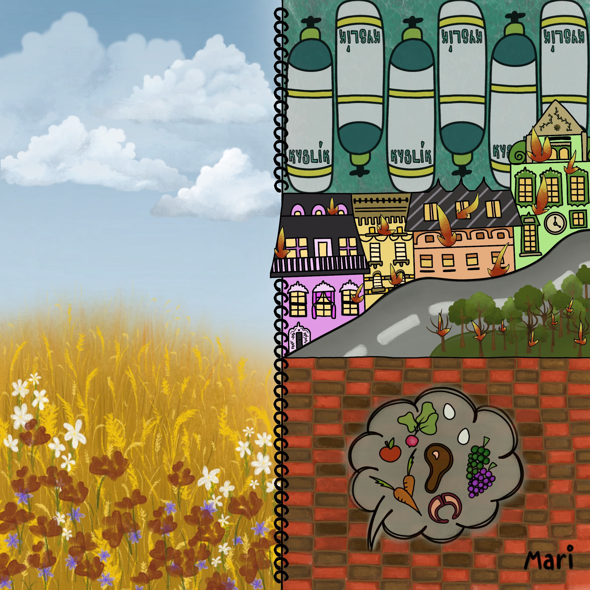
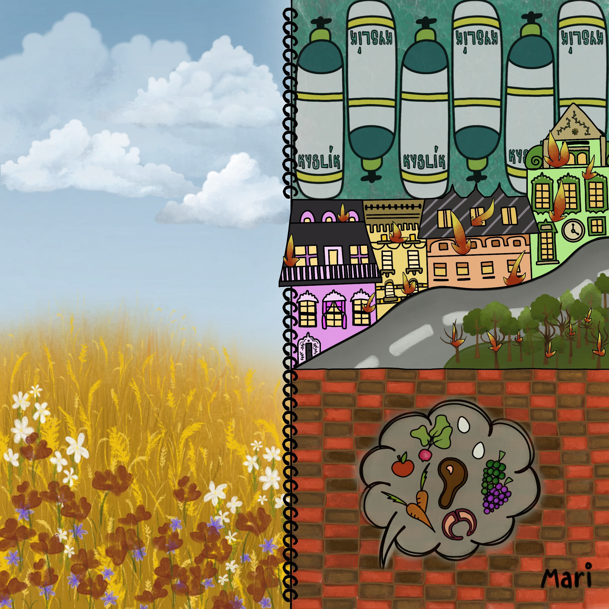

I do not have to describe how many emotions I felt for creating this amazing project. I was lucky, happy, in love but for sure I was scared if everything would be perfect. Let me share with you a little piece of advice.
And if you have just a little bit of passion for your work, it will be easy and perfect. You will become better with every step if you practise your present knowledge.
Our vision was to create a text document, which I received as a backround for my drawing. The document is about the change which our world uderwent in the 21st century. As we can see, our world is not in the best condition as it was before. Our planet is evolving and parts of nature are beying destroyed.
We would like to share with people that we can still help our nature breathe as nature lets us breathe. I chose 10 illustrations of our project and if you click on each of them, you can read more.
 
